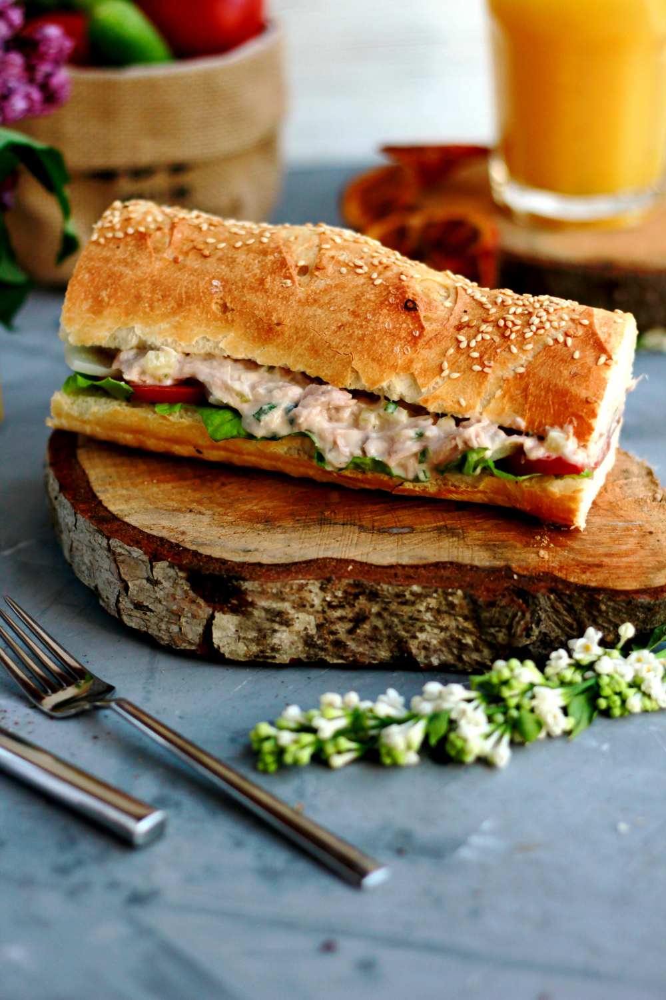

Chickpea Sandwich

Description
Discover the art of crafting a remarkably flavorful vegan sandwich with this effortless chickpea salad creation.
Using a mere handful of ingredients, you'll embark on a culinary journey by mashing chickpeas and seamlessly
blending them with vegan mayo and zesty Dijon mustard. The medley gains depth with the added crunch of finely
chopped red onion and celery, harmoniously combining textures and tastes.
Adjust the seasoning to suit your palate, then generously spread this delectable concoction onto hearty whole
grain bread. Should you desire an extra layer of refreshment, amplify the experience with a medley of crisp
lettuce leaves, juicy tomato slices, and creamy avocado. This wholesome ensemble, born from minimal effort,
transforms into a symphony of flavors that dance in every bite.
It's a testament to how simplicity can meld effortlessly with taste, offering a nourishing and delightful vegan
meal option that caters to both your appetite and your appreciation for culinary artistry. This sandwich unveils
the power of minimalism in delivering a robust and satisfying vegan culinary adventure.
Ingredients
- 1 can (15 oz) chickpeas, drained and rinsed
- 2-3 tablespoons vegan mayonnaise
- 1 tablespoon Dijon mustard
- 2-3 tablespoons finely chopped red onion
- 2-3 tablespoons finely chopped celery
- Salt and pepper to taste
- Sliced whole grain bread
- Lettuce leaves, tomato slices, and avocado slices (optional, for assembling)
Steps
- In a mixing bowl, add the drained and rinsed chickpeas. Use a fork or potato masher to lightly mash the
chickpeas, leaving some texture.
- Add vegan mayonnaise and Dijon mustard to the mashed chickpeas. Mix well to combine and create a creamy
base.
- Stir in finely chopped red onion and celery. These add crunch and flavor to the salad.
- Season the mixture with salt and pepper to taste. Adjust the seasonings according to your preference.
- Toast slices of whole grain bread if desired. This adds a nice texture to the sandwich.
- To assemble the sandwich, spread a generous amount of the chickpea salad onto one slice of bread.
- If using, layer on lettuce leaves, tomato slices, and avocado slices for added freshness and flavor.
- Top with another slice of bread to complete the sandwich.
- Cut the sandwich in half if desired and enjoy your simple and satisfying vegan chickpea salad sandwich!